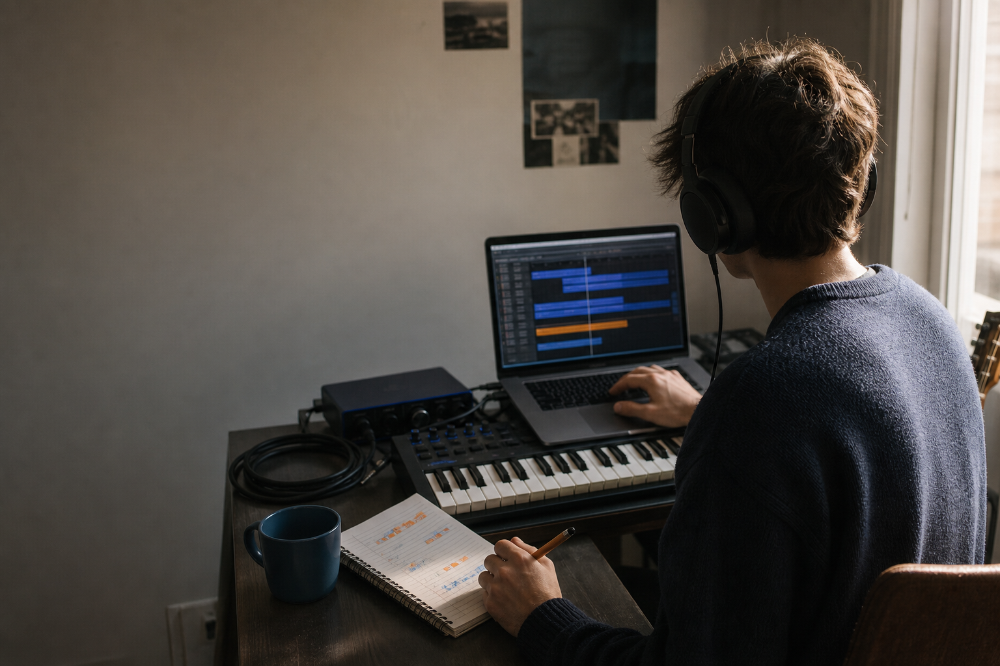
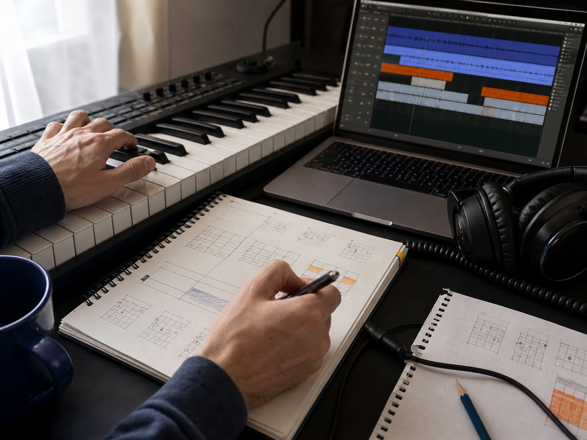
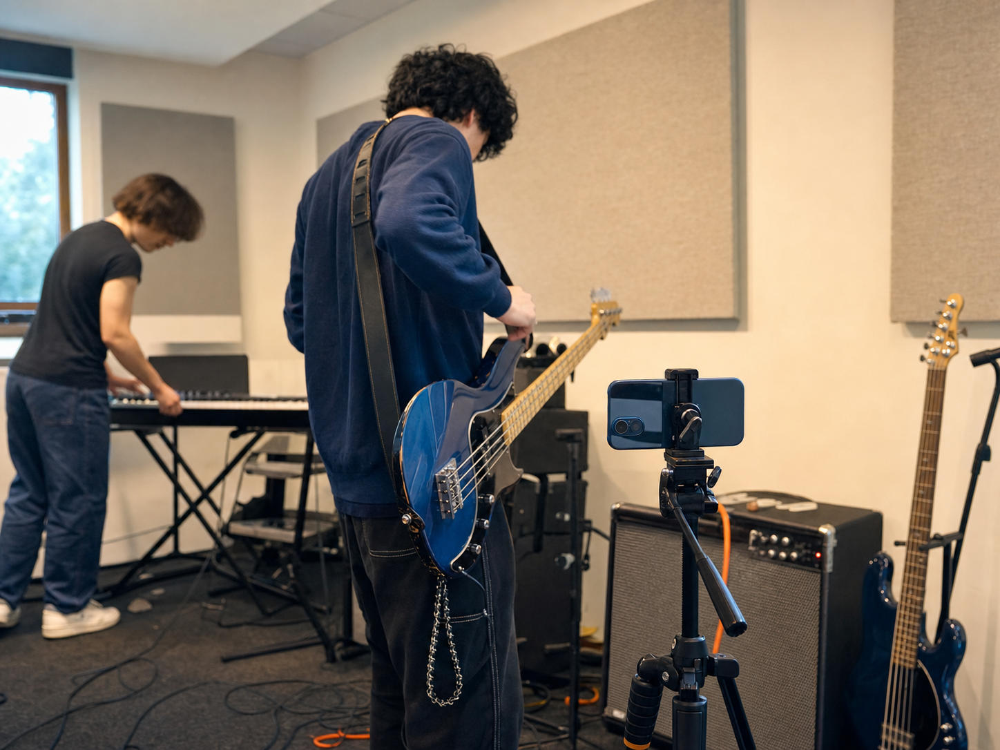

Field notes for independent musicians
Make music.
Plan the week.
A rehearsal, Cubase session, or show usually leaves useful material behind. This page helps you decide what to post before those files disappear into your camera roll.
Build my content week
Choose a starting point
What happened in the room?
One useful week
A simple rhythm for the files you already have.
- 01Capture
Save the clip, photo, and decision while the session is still fresh.
- 02Choose
Find the one change or question that can hold the week together.
- 03Schedule
Give each post one job and place it on a realistic day.
- 04Review
Check useful replies, watch time, saves, and clicks before planning again.
The problem is not a lack of material.
Most musicians I know already have more material than they realize. A rehearsal creates voice memos, rough video, a changed bass line, a difficult transition, and a story about what finally worked. A recording session adds arrangement notes, isolated parts, mistakes, and before-and-after comparisons. The problem is that this material stays scattered across a phone, a laptop, and somebody else's group chat.
I have spent about five years composing and arranging in Cubase, and I play piano, keyboard, guitar, and bass. I have also learned through jazz performances, marching-band rehearsals, accompaniment work, and large student productions. Those experiences did not turn me into an artist manager. They did show me how much useful content disappears when the focus is only on the finished performance.
Track & Traction is my way of solving that problem in public during 2026. The idea is simple: choose one real music-making moment, identify the strongest story inside it, and reuse that story across a manageable week. You do not need to post everywhere. You need a connected set of posts that gives people a reason to follow the next step.
Start with the source
Music making gives you the raw material.
Begin before you think about platforms. Open the project file, rehearsal video, or performance recording and ask what changed. Maybe you simplified a keyboard part so the vocal had more space. Maybe a bass entrance kept rushing until the drummer changed the count-in. Maybe the first arrangement sounded full but had no contrast.
These are stronger starting points than “I need an Instagram post.” They contain a problem, a decision, and a result. From one arranging session, you might share a short before-and- after clip, a screenshot of the session structure, and a paragraph about why you removed an instrument. The same idea can become a Reel, a YouTube Short, and a more detailed blog section without pretending each version is new work.

Show the process
Rehearsal turns technique into a story.
Performance content often jumps from an empty calendar straight to the final stage clip. That misses the most relatable part. Rehearsal shows preparation: how the group solves a transition, how you recover from a missed entrance, what you listen for, and what changes when people finally lock together.
You do not need to film the whole room for two hours. Place a phone where it will not interrupt the rehearsal and capture a few short sections. Ask permission from everyone who appears. Afterward, label the clips while the details are still fresh. A useful folder name such as “bridge timing, take 2 and take 5” is much easier to revisit than twenty files called IMG_4821.
The post should still respect the music. Use the mistake to explain a lesson, not to embarrass another player. If the strongest moment belongs to someone else, get their approval before publishing it. Good behind-the-scenes content creates trust because it shows care, not because it exposes everything.

Give every post a job
Promotion should connect the pieces.
Once the story is clear, choose a job for each version. One post can earn attention with the strongest sound or visual. Another can explain the musical decision. A third can invite a specific response: Which version feels better? What part of rehearsal takes your group the longest? The final post can direct interested people to the full article, performance, or resource.
This is where many content plans become too ambitious. A student musician may have classes, work, practice, and a performance in the same week. Track & Traction is not asking that person to create seven polished productions. A realistic week might include three main posts, two brief updates, and two days used for conversation or review.
The point is not to force the same clip onto every platform. Change the presentation while keeping the central idea. A short vertical video can show the turning point. A blog post can explain the arrangement in detail. LinkedIn can document what the content test taught you. Each format should fit the reason people use that channel.
One possible rhythm
Build a week with one clear idea.
Select a day to see how one rehearsal can move from discovery to conversation. This is a starting structure, not a rule that you must post seven times.
Monday · Listen
Find the strongest change in the session.
- Format
- Private review: mark three clips and write one sentence about each.
- Next action
- Choose the one moment that can carry the whole week.
Close the loop
Measure enough to make the next week better.
A content system needs feedback. Start with small questions: Did people watch past the opening? Which post received a useful comment, save, or reply? Did anyone move from a social post to the landing page? Did the call to action make sense? Track the same few signals each week so the comparison stays honest.
During this course project, I plan to use tagged links, website analytics, and a weekly spreadsheet. Early numbers will be small, so I will treat them as directional evidence rather than proof that one format always wins. The useful outcome is a better decision: repeat the clear rehearsal breakdown, shorten the slow opening, or stop spending time on a format that does not fit the audience.
Traction does not mean chasing the largest number on the screen. For an emerging musician, one thoughtful reply, one planner download, or one listener who watches the full performance may be more useful than empty reach. The goal is to understand what moved the right person one step closer.
What earned attention?
What created a real response?
What will change next week?
Plan the week before the files disappear into your camera roll.
The One Session, One Week Content Planner helps you choose a source, name the story, assign each post a job, and review what happened. It is free, printable, and deliberately simple.
Open the free planner